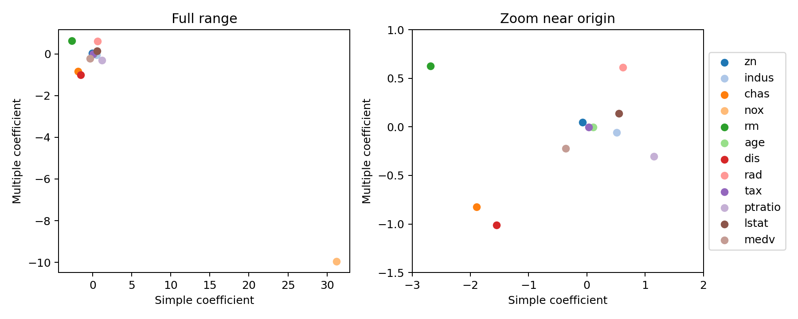

代码 3.7-14 · 第 15 题：简单与多元回归预测犯罪率
按完整 Notebook 的顺序运行；本块可能依赖前面的变量。3.6—3.7包含教材真实数据与模拟实验；全样本统计分析不等于独立测试评估。
逐步读代码
本题响应改为crim，其余变量包括medv都作为候选输入。每个变量单独拟合，保存到字典；列表推导式按相同变量顺序提取系数与p值。全模型则一次控制全部输入。enumerate同时给出序号j和变量名；get_cmap取调色板，序号确定颜色。内层循环把同一点画到两张图。左图保留完整范围，右图用xlim、ylim放大原点附近；legend根据label生成图例，bbox_to_anchor将图例移到图外，避免文字堆叠。不同变量单位不一样，不能按系数绝对值给“重要性”排名。
实际运行输出
simple_coef simple_p multiple_coef multiple_p zn -0.073935 5.5065e-06 0.04571 0.015344 indus 0.50978 1.4503e-21 -0.05835 0.48571 chas -1.8928 0.20943 -0.82538 0.48584 nox 31.249 3.7517e-23 -9.9576 0.06037 rm -2.6841 6.3467e-07 0.62891 0.30074 age 0.10779 2.8549e-16 -0.00084828 0.96232 dis -1.5509 8.5199e-19 -1.0122 0.00037259 rad 0.61791 2.6938e-56 0.61247 8.5881e-12 tax 0.029742 2.3571e-47 -0.0037756 0.46576 ptratio 1.152 2.9429e-11 -0.30407 0.10339 lstat 0.5488 2.6543e-27 0.1388 0.067398 medv -0.36316 1.174e-19 -0.22006 0.00026053
